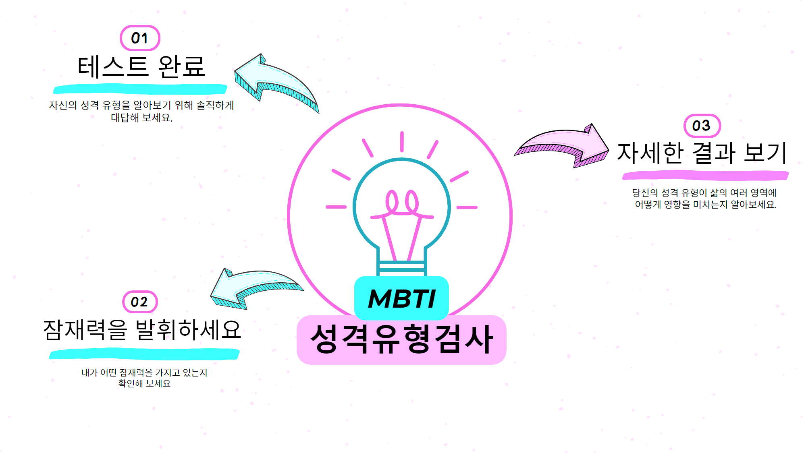

자유 시간 중 상당 부분을 다양한 관심사를 탐구하는 데 할애한다.
다른 사람이 울고 있는 모습을 보면 자신도 울고 싶어질 때가 많다.
일이 잘못될 때를 대비해 여러 대비책을 세우는 편이다.
압박감이 심한 환경에서도 평정심을 유지하는 편이다.
파티나 행사에서 새로운 사람에게 먼저 자신을 소개하기보다는 주로 이미 알고 있는 사람과 대화하는 편이다.
하나의 프로젝트를 완전히 완료한 후 다른 프로젝트를 시작하는 편이다.
일정이나 목록으로 계획을 세우는 일을 좋아한다.
작은 실수로도 자신의 능력이나 지식을 의심하곤 한다.